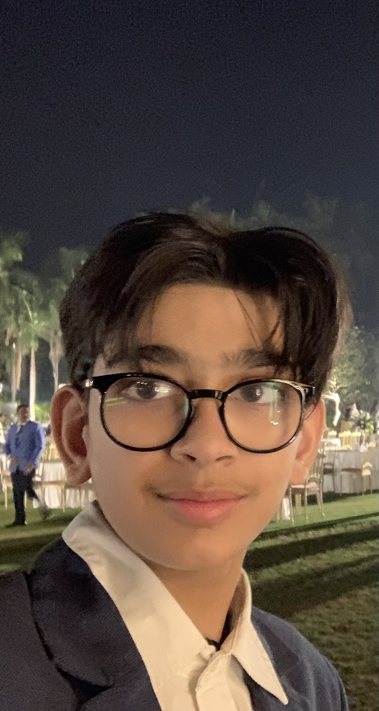

About Me
Hello! My name is Jaison Naran. I am passionate about learning and whenever embracing new ideas or concepts that is deemed to be basic in society. Be it new technology, creative work or just reading I have always maintained Learning and Development as my passion. This means that I stress the analytical method in solving problems and the attitude of keeping an open mind to whatever one meets in his work. With me, I have versatile working experience that enables me to be creative and approach each problem from relatively different perspectives. One can only hope to be able to positively respond to the presence of people that shall be eager to learn more discoveries and innovations.
To me, tennis is something very dear and it helps me to remain in touch with sports and actually, with life. When I have some free time, I play video games, my favorites are Minecraft, Warframe, God of War, Elden Ring, and Dark Souls, Sekiro, Bloodborne. In addition to being forms of entertainment, these games stimulate my critical mind and engage my heuristics for solving problems and making decisions. I like to create things and follow the new trends in the technologies. On the other hand, I have a low tolerance for boring routines and settings that restrict one from developing freely. Curiosity to me is a virtue and I always ensure that I remain very open to any outcomes in any pursuit I undertake.
Skill Set:
- Analytical Thinking
- Strategic Planning
- Time Management
- Team Collaboration
- Technical Proficiency
- Creative Problem-Solving
- Effective Communication
- Leadership
- Adaptability
- Critical Thinking
- Sportsmanship
- Continuous Learning
- Project Management
- Conflict Resolution
Academic ability and other pertinent accomplishments and traits are some of the aspects that I boast of. I can analyze a problem and deliberate on it through my analytical personality and sound critical thinking skills. As for organizational skills, I am good at planning tasks due to my good strategic skills in time management. I do well in terms of teamwork; he has leadership qualities exhibited in him as well as superb interpersonal skills. My technical ability and ability when it comes to creative problem-solving within particular technological and intellectual fields enable me to work within them. He thus needs to have good communication skills so that he can effectively pass on his ideas. Co-ordination skills will also measure his flexibility which yields positive results from change. I am very passionate about learning and I always have a goal to learn more and more every time. Also, my experience in project management and skills in conflict solving enables me to fulfil numerous tasks and solve conflicts effectively. Indirectly, my sportsmanship is apparent when he portrays fair and courteous conduct when approaching the issue and when speaking to the opposing team and individuals in general.